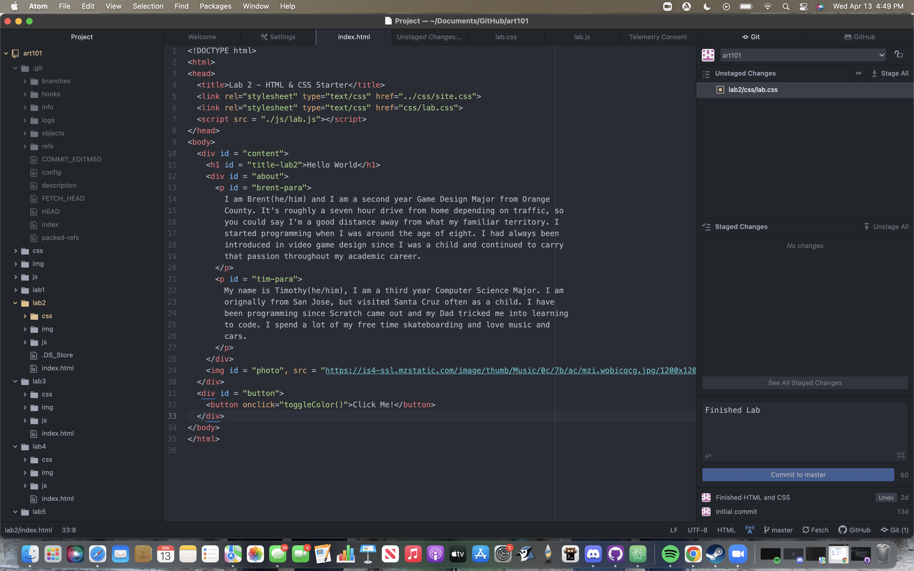

The idea of this lab was to further create a local file structure on my computer and add index.html files. I was also instructed to add an image of myself as well as create a bulleted list that links to each of my other labs.
Installing and using the file structure wasn't too hard. Overall, I would say my biggest challenge was finding the file path to upload my selfie picture. I realized that I could actually just drag and drop the image to img folder instead of trying to locate the exact file path.
This is my index.html file for Lab 3. Below is a screenshot of my finished file structure:
